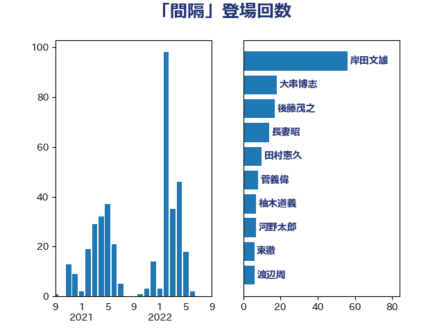

単語「間隔」

| 岸田文雄 | 自由民主党 | 56 回 |
| 大串博志 | 立憲民主党 | 18 回 |
| 後藤茂之 | 自由民主党 | 17 回 |
| 長妻昭 | 立憲民主党 | 14 回 |
| 田村憲久 | 自由民主党 | 10 回 |
| 菅義偉 | 自由民主党 | 8 回 |
| 柚木道義 | 立憲民主党 | 7 回 |
| 河野太郎 | 自由民主党 | 7 回 |
| 東徹 | 日本維新の会 | 6 回 |
| 渡辺周 | 立憲民主党 | 6 回 |
| 浅野哲 | 国民民主党 | 5 回 |
| 羽生田俊 | 自由民主党 | 5 回 |
| 西村康稔 | 自由民主党 | 5 回 |
| 小川淳也 | 立憲民主党 | 4 回 |
| 江田憲司 | 立憲民主党 | 4 回 |
| 笠井亮 | 日本共産党 | 4 回 |
| 米山隆一 | 立憲民主党 | 4 回 |
| 赤羽一嘉 | 公明党 | 4 回 |
| 井出庸生 | 自由民主党 | 3 回 |
| 小西洋之 | 立憲民主党 | 3 回 |
| 松島みどり | 自由民主党 | 3 回 |
| 枝野幸男 | 立憲民主党 | 3 回 |
| 浜口誠 | 国民民主党 | 3 回 |
| 田村智子 | 日本共産党 | 3 回 |
| 細田博之 | 自由民主党 | 3 回 |
| 西村智奈美 | 立憲民主党 | 3 回 |
| 伊藤俊輔 | 立憲民主党 | 2 回 |
| 佐藤英道 | 公明党 | 2 回 |
| 古川俊治 | 自由民主党 | 2 回 |
| 堀内詔子 | 自由民主党 | 2 回 |
| 室井邦彦 | 日本維新の会 | 2 回 |
| 山際大志郎 | 自由民主党 | 2 回 |
| 岩本剛人 | 自由民主党 | 2 回 |
| 岸信夫 | 自由民主党 | 2 回 |
| 川合孝典 | 国民民主党 | 2 回 |
| 川田龍平 | 立憲民主党 | 2 回 |
| 平木大作 | 公明党 | 2 回 |
| 末松信介 | 自由民主党 | 2 回 |
| 梅村聡 | 日本維新の会 | 2 回 |
| 浜田聡 | NHK党 | 2 回 |
| 浮島智子 | 公明党 | 2 回 |
| 石川博崇 | 公明党 | 2 回 |
| 菅直人 | 立憲民主党 | 2 回 |
| 萩生田光一 | 自由民主党 | 2 回 |
| 下条みつ | 立憲民主党 | 1 回 |
| 中村裕之 | 自由民主党 | 1 回 |
| 丹羽秀樹 | 自由民主党 | 1 回 |
| 今枝宗一郎 | 自由民主党 | 1 回 |
| 加田裕之 | 自由民主党 | 1 回 |
| 吉川元 | 立憲民主党 | 1 回 |
| 吉川沙織 | 立憲民主党 | 1 回 |
| 吉田統彦 | 立憲民主党 | 1 回 |
| 大塚耕平 | 国民民主党 | 1 回 |
| 大西健介 | 立憲民主党 | 1 回 |
| 宮本周司 | 自由民主党 | 1 回 |
| 宮本徹 | 日本共産党 | 1 回 |
| 小島敏文 | 自由民主党 | 1 回 |
| 小沼巧 | 立憲民主党 | 1 回 |
| 山口那津男 | 公明党 | 1 回 |
| 山崎誠 | 立憲民主党 | 1 回 |
| 斉藤鉄夫 | 公明党 | 1 回 |
| 松野博一 | 自由民主党 | 1 回 |
| 河西宏一 | 公明党 | 1 回 |
| 浅田均 | 日本維新の会 | 1 回 |
| 海江田万里 | 立憲民主党 | 1 回 |
| 渡辺猛之 | 自由民主党 | 1 回 |
| 磯崎仁彦 | 自由民主党 | 1 回 |
| 福岡資麿 | 自由民主党 | 1 回 |
| 葉梨康弘 | 自由民主党 | 1 回 |
| 蓮舫 | 立憲民主党 | 1 回 |
| 近藤和也 | 立憲民主党 | 1 回 |
| 野上浩太郎 | 自由民主党 | 1 回 |
| 阿部知子 | 立憲民主党 | 1 回 |
| 高橋光男 | 公明党 | 1 回 |
| 高橋千鶴子 | 日本共産党 | 1 回 |
| 齋藤健 | 自由民主党 | 1 回 |